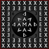
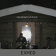
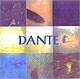
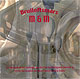
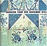

| 2013 |
Heins Jazzgitaar JB-V (2002)

Goede Vrijdag 29 maart ging een lang gekoesterde droom in vervulling.
Ik kreeg het voorrecht om op een handgemaakte jazzgitaar door Wim Heins (13-4-1956 ~ 11-3-2017) te mogen gaan spelen.
|
| 2009 |
MADEX opent het Sunsation Festival
Op 20 juni, 04.50 uur met 'The Drowning Fields - De Verdrinkende Velden' tijdens de langste dag op het Sunsation Festival.
Locatie: Observatorium Robert Morris aan de Swifterringweg Lelystad.
|
| 2008 |
20 september was de MADEX-tryout 'The Drowning Fields - De Verdrinkende Velden'
Tijdens de opening van de expositie 'Ode aan het verloren polderland' in de galerie 'Op de zeebodem' schelpenbolweg 5 te Wieringerwerf
Onder de titel 'The Drowning Fields - De Verdrinkende Velden' wil MADEX de gevoelens verklanken van de polders, delen van Wieringen en Wieringermeer, die opnieuw geïnundeerd [kunnen] gaan worden in de [nabije] toekomst.
|
|
8 augustus 'EXMED op bedevaart tijdens Mijzenfestival'
Het doel van onze pelgrimage was de mystieke krachten van dit bedevaartoord te verklanken op woensdag tussen 12:00 - 17:00 en 21:00 - 22:00 uur op de bedevaartplek in de Mijzenpolder.
bronnen: oorspronkelijke [religieuze] muziek van alle tijden en windstreken.
|
|
MADEX
| 
|
 |
drumkit - Bas Koppe
gitaar - Geert Schoonbeek
| |
Madex verklankt de gekte van opgesloten zijn en de extase van bevrijding...
Madex slaat zich een weg door...
Madex vult ruimte die afgedankt is...!
|
| 2007 |
EXMED
| 
|
|
Live opgenomen op 14 juli tijdens zonsondergang in tuinhuis 'kvälröd' in Westerland.
|
|
|
|
Sinds juli 2005 zoeken Bas Koppe - slagwerk en Geert Schoonbeek - sopraansax naar bevrijding van geluid in een sacrale omgeving.
Dit geschiedt door vol begeestering en bezieling een ruimte te scheppen van klank en ritme.
Extase en meditatie versmelten.
Eén jaar later is in 5 opnames binnen 24 uur de uitkomst vastgelegd.
Een neerslag hiervan is verschenen 27-04-07 op een live dubbel c.d. genaamd 'EXMED 010705:220706' 
|
"Innovatieve en vernieuwende muziek - Geert Schoonbeek beschikt over een prachtig geluid." - Ben van den Dungen
|
| 2005 |
CD project 'Dante'
|
|
|
|  |
|
Een klankgedicht geïnspireerd, op 9 uit de 111 pastels die
Juke Hudig heeft gemaakt naar Dante's Divina Commedia, gecreëerd
ter begeleiding van de expositie: "Reis naar het Licht" georganiseerd
door de WEX Hippolytuskerk
Levend opgenomen 26 januari in de Hippolytuskerk
De Klankdichter - geertbord [= elektrische gitaar als moederbord
voor klank kathedralen]
opnameleiding & productie - Joran de Herder |
|
|
16 juni kwam er een eind de queeste naar de sopraansaxofoon.
Nadat de saxofoon 15 jaar uit mijn leven is geweest is hij wedergekeerd!
Ik ben veel dank verschuldigd aan de instrumentbouwers van Borgani en Remy & Friso van Amsterdamwinds
|
| 2004 |
'nogalPuur' 21-11-04 tot 22-04-06
|
|
|
verleend De Klankdichter, geestelijk en d.m.v. de saxofoon, ondersteuning aan nogalPuur. Dit gezelschap staat voor: grenzeloze Nederlandstalige popmuziek anno 2003.
|
|
CD 'M & M Bruiloftsmars' 06-05-04
| 
|
|
Op verzoek gemaakt voor de huwelijksdag van Micon Schorsij en Marjo
Bakker. Levend opgenomen 26 april in de Hippolytuskerk en 29 april
in de 'keuken' van Sacha de Herder
De Klankdichter - kerkorgel, keukengeluiden en geertbord
Sacha de Herder - keukenslagwerk, opnameleiding en realisatie
|
|
Bonustrack: Strijktrio no.1 van De Klankdichter: "Alles Goed? en de zelfkant
van een gesprek!" uitgevoerd door het Prisma Strijktrio: Janneke van
Prooijen - viool, Finn Moricke - altviool en Michiel Weidner - cello opgenomen
tijdens de première 28 maart in de Hippolytuskerk door Sacha de Herder.
|
|
| 2001 |
'Requiem voor een geruimde stal'
|
|
| 
|
|
Dit werk is een verklanking van de laatste dag van een kudde
melkkoeien die ruiming voor ogen staat. Dit is een antwoord
op het beleid t.a.v. de MKZ-crises in dat jaar. Première 22
juli in een koeienstal in Hippolytushoef
koe-positie - Geert Schoonbeek
producent -Sacha de Herder
musici - de koeien en melkstal van de gebroeders Ruijter
|
"...de metaalachtige klank van de stalgeluiden zwelt aan, wordt
hitsig. We horen supermelancholiek koegeloei. Je ervaart het verdriet
van de dieren in het voorportaal van de dood..."
[ Bert de Jong, Noord Hollands Dagblad 23-7-2001 ]
|
| "door Pijn tot Waarheid"
"deze pelgrim neemt de weg van de meeste weerstand"
|